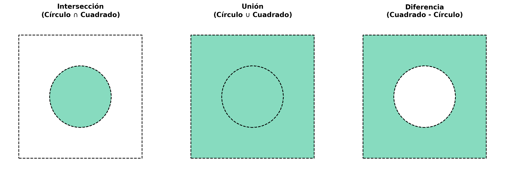
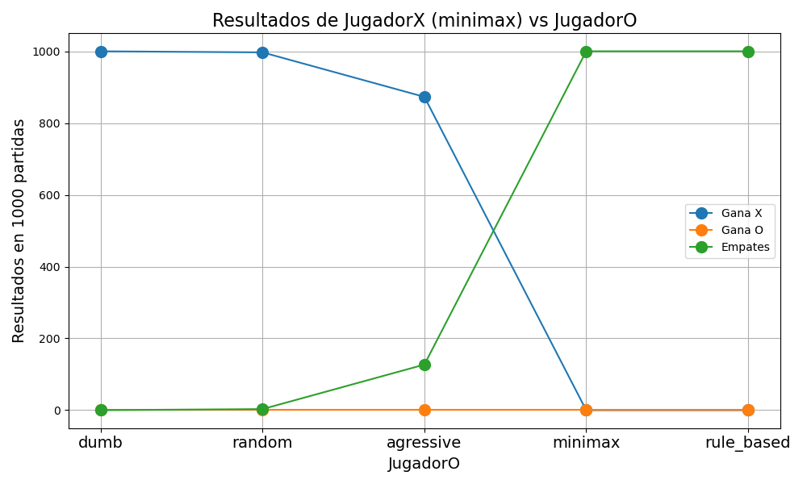

GTP4: Programación en C++ para Ciencia e Ingeniería
Estanislao Claucich
A continuación se presentan las soluciones a los ejercicios propuestos en el GTP4.
Ejercicio 1: Formas geométricas
Implementar la clase geoshape_t que represente formas geométricas en 2D. La clase debe incluir métodos para calcular el área, el centro de gravedad y la inercia polar de la forma. Se deben implementar al menos las siguientes formas: círculo, cuadrado, elipse y pentágono regular. A su vez, implementar funciones para calcular la intersección, unión y diferencia entre dos de estas figuras.
La clase abstracta geoshape_t
El núcleo de la resolución de este ejercicio se basa en explotar el concepto de polimorfismo. Se definió una clase puramente virtual geoshape_t que expone una interfaz común para todas las figuras geométricas 2D:
Cualquier figura gráfica deberá implementar estos dos métodos: bbox (que retorna los límites del eje cartesiano rectangular que encierran a la figura) e inside (que determina si un punto (x, y) pertenece o no al interior de la misma).
Integración numérica para el cálculo de propiedades
La principal ventaja del polimorfismo es que nos permite escribir funciones de cálculo genéricas que reciben una referencia a geoshape_t sin importar qué figura concreta se esté evaluando. Generando una grilla 2D (con un total configurable de particiones, \(N=500\)) en el dominio delimitado por el bbox, es posible aproximar cálculos complejos como el área, el centro de gravedad y la inercia polar contando y acumulando únicamente aquellos puntos de la grilla donde el método g.inside(pt) arroje true.
Como ejemplo, el cálculo del área se implementa iterando sobre esta grilla y acumulando los diferenciales \(dx \cdot dy\):
double area(geoshape_t &g) {
vector<double> bb;
g.bbox(bb);
int N = 500; // Resolución de nuestra grilla de integración
double dx = (bb[2] - bb[0]) / N;
double dy = (bb[3] - bb[1]) / N;
double a = 0.0;
vector<double> pt(2);
for (int i = 0; i < N; ++i) {
pt[0] = bb[0] + (i + 0.5) * dx;
for (int j = 0; j < N; ++j) {
pt[1] = bb[1] + (j + 0.5) * dy;
if (g.inside(pt)) {
a += dx * dy;
}
}
}
return a;
}De manera análoga, para el centroide (grav_center) y la inercia polar (inertia) sólo cambian los factores a multiplicar por cada paso incremental del área evaluada:
vector<double> grav_center(geoshape_t &g) {
vector<double> bb;
g.bbox(bb);
int N = 500;
double dx = (bb[2] - bb[0]) / N;
double dy = (bb[3] - bb[1]) / N;
double a = 0.0, cx = 0.0, cy = 0.0;
vector<double> pt(2);
for (int i = 0; i < N; ++i) {
pt[0] = bb[0] + (i + 0.5) * dx;
for (int j = 0; j < N; ++j) {
pt[1] = bb[1] + (j + 0.5) * dy;
if (g.inside(pt)) {
double dA = dx * dy;
a += dA;
cx += pt[0] * dA;
cy += pt[1] * dA;
}
}
}
return {cx / a, cy / a};
}
double inertia(geoshape_t &g) {
vector<double> cg = grav_center(g);
vector<double> bb;
g.bbox(bb);
int N = 500;
double dx = (bb[2] - bb[0]) / N;
double dy = (bb[3] - bb[1]) / N;
double I = 0.0;
vector<double> pt(2);
for (int i = 0; i < N; ++i) {
pt[0] = bb[0] + (i + 0.5) * dx;
for (int j = 0; j < N; ++j) {
pt[1] = bb[1] + (j + 0.5) * dy;
if (g.inside(pt)) {
double r2 = pow(pt[0] - cg[0], 2) + pow(pt[1] - cg[1], 2);
I += r2 * (dx * dy);
}
}
}
return I;
}Las figuras base
Con la arquitectura del polimorfismo lista, modelar las figuras se reduce a una tarea muy simple. Figuras primarias como square_t, circle_t y ellipse_t heredan de geoshape_t e implementan su propia lógica matemática rápida.
class circle_t : public geoshape_t {
double cx, cy, radius;
public:
circle_t(double cx, double cy, double r) : cx(cx), cy(cy), radius(r) {}
void bbox(vector<double> &bb) override {
bb = {cx - radius, cy - radius, cx + radius, cy + radius};
}
bool inside(const vector<double> &x) override {
return pow(x[0] - cx, 2) + pow(x[1] - cy, 2) <= radius * radius;
}
};
class circle_t : public geoshape_t {
double cx, cy, radius;
public:
circle_t(double cx, double cy, double r) : cx(cx), cy(cy), radius(r) {}
void bbox(vector<double> &bb) override {
bb = {cx - radius, cy - radius, cx + radius, cy + radius};
}
bool inside(const vector<double> &x) override {
return pow(x[0] - cx, 2) + pow(x[1] - cy, 2) <= radius * radius;
}
};
class ellipse_t : public geoshape_t {
double cx, cy, rx, ry;
public:
ellipse_t(double cx, double cy, double rx, double ry)
: cx(cx), cy(cy), rx(rx), ry(ry) {}
void bbox(vector<double> &bb) override {
bb = {cx - rx, cy - ry, cx + rx, cy + ry};
}
bool inside(const vector<double> &x) override {
return pow((x[0] - cx) / rx, 2) + pow((x[1] - cy) / ry, 2) <= 1.0;
}
};En el caso particular de polígonos convexos (convex_polygon_t), la lógica de inside() requiere utilizar el producto cruz 2D entre el punto analizado y las sucesivas aristas dirigidas del polígono, para validar geométricamente que este punto recaiga todo el tiempo sobre el mismo semiplano proyectado:
class convex_polygon_t : public geoshape_t {
vector<double> pts;
public:
convex_polygon_t(const vector<double> &xj) : pts(xj) {}
void bbox(vector<double> &bb) override {
if (pts.empty()) return;
bb = {pts[0], pts[1], pts[0], pts[1]};
for (size_t i = 2; i < pts.size(); i += 2) { // Iterar sobre los puntos x, y
if (pts[i] < bb[0]) bb[0] = pts[i];
if (pts[i] > bb[2]) bb[2] = pts[i];
if (pts[i+1] < bb[1]) bb[1] = pts[i+1];
if (pts[i+1] > bb[3]) bb[3] = pts[i+1];
}
}
bool inside(const vector<double> &x) override {
if (pts.size() < 6) return false; // Todo polígono debe tener al menos 3 vértices
int sign = 0;
size_t n = pts.size() / 2;
// Producto cruz
for (size_t i = 0; i < n; ++i) {
double x1 = pts[2*i];
double y1 = pts[2*i + 1];
double x2 = pts[(2*i + 2) % (2*n)];
double y2 = pts[(2*i + 3) % (2*n)];
double dx = x2 - x1;
double dy = y2 - y1;
double cross = dx * (x[1] - y1) - dy * (x[0] - x1);
if (cross != 0) {
int param_sign = (cross > 0) ? 1 : -1;
if (sign == 0) sign = param_sign;
else if (sign != param_sign) return false;
}
}
return true;
}
};Operaciones booleanas entre figuras
Este diseño orientado a objetos posibilita armar operaciones Booleanas que compongan geometrías a partir de otras, combinándolas para calcular la solución gráfica con un bajo costo arquitectural. Para ello creamos rutinas Booleanas intersection_t, union_t y difference_t.
Dichas clases almacenan en su interior una variable vector<geoshape_t*> shapes; y consiguen un comportamiento acoplado condicionando la regla del inside(). Analicemos el caso de la Intersección: para considerarse partícipe del sistema central, el punto evaluado debe recaer dentro del interior de la totalidad de las piezas referidas.
class intersection_t : public geoshape_t {
public:
vector<geoshape_t*> shapes;
void bbox(vector<double> &bb) override {
/* Se obtiene solapando y achicando recursivamente las cajas de las figuras... */
}
bool inside(const vector<double> &x) override {
if (shapes.empty()) return false;
for (auto* shape : shapes) {
// El punto debe existir en TODAS las sub-figuras
if (!shape->inside(x)) return false;
}
return true;
}
};Para comprobar la correcta implementación, se instanciaron 4 figuras diferentes sencillas donde sabemos previamente el resultado exacto de las distintas operaciones:
// 1. Verificar Cuadrado (Lado L=2, centrado en el origen)
square_t sq(-1.0, -1.0, 1.0, 1.0);
double sq_area_exact = 2.0 * 2.0;
double sq_inertia_exact = (2.0 * pow(2.0, 3) / 12.0) + (2.0 * pow(2.0, 3) / 12.0);
// 2. Verificar Círculo (Radio R=2, centrado en el origen)
circle_t circ(0.0, 0.0, 2.0);
double pi = acos(-1.0);
double circ_area_exact = pi * pow(2.0, 2);
double circ_inertia_exact = pi * pow(2.0, 4) / 2.0;
// 3. Verificar Elipse (rx=2, ry=1, centrada en el origen)
ellipse_t el(0.0, 0.0, 2.0, 1.0);
double el_area_exact = pi * 2.0 * 1.0;
// Inercia de la elipse = I_x + I_y = (pi * rx * ry^3 / 4) + (pi * ry * rx^3 / 4)
double el_inertia_exact = (pi * 2.0 * pow(1.0, 3) / 4.0) + (pi * 1.0 * pow(2.0, 3) / 4.0);
// 4. Pentágono regular (R=2, centrado en el origen)
vector<double> pent_pts;
double R = 2.0;
for (int i = 0; i < 5; ++i) { // 5 vértices espaciados 72 grados
pent_pts.push_back(R * cos(i * 2.0 * pi / 5.0));
pent_pts.push_back(R * sin(i * 2.0 * pi / 5.0));
}
convex_polygon_t pent(pent_pts);
// Fórmulas exactas para un polígono regular de N lados circunscrito en un círculo de radio R
double pent_area_exact = (5.0 / 2.0) * pow(R, 2) * sin(2.0 * pi / 5.0);
double pent_inertia_exact = pent_area_exact * pow(R, 2) / 6.0 * (2.0 + cos(2.0 * pi / 5.0));Se comprueban las operaciones booleanas con un caso simple y controlado. Un círculo de radio 1 inscripto en un cuadrado de lado 4, donde el área de la intersección debe ser igual al área del círculo y el área de la unión debe ser igual al área del cuadrado:

// Cuadrado de 4x4 centrado en el origen
square_t bsq(-2.0, -2.0, 2.0, 2.0);
// Círculo de R=1 centrado en el origen
circle_t bcirc(0.0, 0.0, 1.0);
intersection_t inter;
inter.shapes.push_back(&bsq);
inter.shapes.push_back(&bcirc);
union_t uni;
uni.shapes.push_back(&bsq);
uni.shapes.push_back(&bcirc);
difference_t diff;
diff.shapes.push_back(&bsq);
diff.shapes.push_back(&bcirc);Ejercicio 2: Vectores generales
Escribir una clase polimórfica para representar vectores. Se deben implementar los vectores fullvec_t (almacena todos los elementos), stride_t (almacena un valor inicial, un paso y la cantidad de elementos) y sparse_t (almacena la cantidad total de elementos, un vector con los índices de los elementos no nulos y otro vector con los valores correspondientes). Implementar funciones para calcular el número de elementos no nulos, la suma, el máximo y el mínimo de los elementos del vector. Además, implementar una función reduce que reciba un vector y una operación asociativa (suma, máximo o mínimo) y devuelva el resultado de aplicar esa operación a todos los elementos del vector.
La clase abstracta vector_t
De manera análoga al ejercicio anterior, definimos una interfaz base abstracta vector_t. Su objetivo es ocultar cómo se guardan realmente los elementos en memoria, forzando a que todo tipo de vector responda únicamente a dos consultas básicas: size() (obtener la longitud del vector) y el sobrecargado operator[] (obtener el valor alojado en la posición i).
Con esta interfaz, se implementaron rutinas genéricas (non_null, sum, max, min) que operan ciegamente sobre referencias vector_t &v. Iterando hasta su respectivo .size(), y utilizando su sobrecarga dinámica de indexado v[i]. De esta forma, podemos calcular estas propiedades sin importar cuál es la naturaleza de almacenamiento del vector en particular:
int non_null(vector_t &v) {
int count = 0;
for (int i = 0; i < v.size(); ++i) {
if (v[i] != 0.0) count++;
}
return count;
}
double sum(vector_t &v) {
double total = 0.0;
for (int i = 0; i < v.size(); ++i) {
total += v[i];
}
return total;
}
double max(vector_t &v) {
if (v.size() == 0) return numeric_limits<double>::lowest();
double current_max = v[0];
for (int i = 1; i < v.size(); ++i) {
if (v[i] > current_max) current_max = v[i];
}
return current_max;
}
double min(vector_t &v) {
if (v.size() == 0) return numeric_limits<double>::max();
double current_min = v[0];
for (int i = 1; i < v.size(); ++i) {
if (v[i] < current_min) current_min = v[i];
}
return current_min;
}Diferentes vectores
Se definieron tres tipos de vectores:
fullvec_t: Un vector denso clásico:
stride_t: No guarda valores individualizados sino su definición matemática secuencial pura (start,inc,size). Resulta sumamente eficiente en memoria, permitiendo emular millones de puntos usando sólo tres variables escalares con una resolución al vuelo:
sparse_t: Vector ralo. Está diseñado para conjuntos masivos compuestos mayoritariamente por ceros absolutos, para ahorrar RAM. En lugar de un arreglo denso masivo, conserva dos arreglos limitados a la par: los índices afectados (indx) y sus respectivos valores numéricos (vals). Al pedir una posición no listada, asume implícitamente0.0.
class sparse_t : public vector_t {
private:
int sz;
vector<int> indx;
vector<double> vals;
public:
sparse_t(int sz, const vector<int>& indx, const vector<double>& vals)
: sz(sz), indx(indx), vals(vals) {}
int size() override {
return sz;
}
double operator[](int i) override {
// Buscamos si el índice existe en los valores definidos
for (size_t k = 0; k < indx.size(); ++k) {
if (indx[k] == i) {
return vals[k];
}
}
// Si es un índice no registrado, implícitamente vale nulo (0.0)
return 0.0;
}
};Vemos una simple prueba de la funcionalidad implementada:
Reducción funcional y clases asociativas
Para generalizar al máximo operaciones repetitivas (como la suma o la búsqueda del valor máximo en una sola función universal reduce), se empleó la inyección de dependencias mediante la clase abstracta assoc_t. Esta clase porta un elemento neutro null() y una función binaria asociativa g(x, y).
class assoc_t {
public:
virtual double g(double x,double y)=0;
virtual double null()=0;
};
class sum_t : public assoc_t {
public:
double g(double x,double y) override { return x+y; }
double null() override { return 0; }
};
class max_t : public assoc_t {
public:
double g(double x,double y) override { return (x > y) ? x : y; }
double null() override { return numeric_limits<double>::lowest(); }
};
class min_t : public assoc_t {
public:
double g(double x,double y) override { return (x < y) ? x : y; }
double null() override { return numeric_limits<double>::max(); }
};
double reduce(vector_t &v, assoc_t &op) {
if (v.size() == 0) return op.null();
double result = op.null();
for (int i = 0; i < v.size(); ++i) {
result = op.g(result, v[i]);
}
return result;
}Pudiendo crear derivados simples como un sum_t que sume o un max_t, logramos que al instanciar herramientas abstractas sobre esta rutina genérica, se computen los mismos resultados analíticos deseados que antes pero sin necesidad de mantener múltiples ciclos iteradores idénticos recorriendo nuestra memoria.
Ejercicio 3: tic-tac-toe general
A partir del GTP anterior de tic-tac-toe, generalizar los jugadores a partir de una clase player_t que permita simplificar la implementación de la interacción entre jugadores diferentes.
Implementar un sistema de competencia, comenzando desde octavos de final, donde se enfrentarán jugadores aleatorios entre sí, realizando \(N\) partidas entre sí y obteniendo un ganador. Además, sortear las ventajas invirtiendo los turnos iniciales y administrar la memoria borrando a los perdedores en el proceso.
La clase abstracta player_t
Para generalizar el comportamiento de los diferentes agentes virtuales que juegan al tic-tac-toe, se diseñó una clase abstracta pura player_t de la cual deban heredar forzosamente todas las estrategias implementadas en módulos anteriores.
Esta interfaz los obliga a tener una variable con un nombre universal y la definición de su lógica de turno subyacente matemáticamente a través del método move. Asimismo, declara un destructor virtual para habilitar el manejo de la jerarquía polimórfica sin generar fugas de memoria remanentes al tratar de emplear delete usando su tipo padre (player_t):
Con esto, las heurísticas previas (dumb_t, random_t, agressive_t, minimax_t y rule_based_t) asumen prefijos de registro para ser fácilmente identificables (e.g. minimax_14) y extienden de ella.
Playoffs
El modelo orientado a objetos (donde tácticas concretas devienen abstractamente un simple player_t*) consigue que a la función principal encargada de las mecánicas no le importe a quiénes maneja:
Seguidamente, se formuló un sistema principal de playoffs donde competirán diferentes tipos de jugadores entre sí y se obtendrá un campeón. Como el juego tiene una pequeña ventaja por quien comienza, se juegan \(N\) partidas con cada jugador iniciando primero, para luego sumar los resultados y determinar un ganador estadístico:
// Partidas donde p1 juega primero y donde p2 juega primero
vector<int> res1 = match(*p1, *p2, matches_per_round, false);
vector<int> res2 = match(*p2, *p1, matches_per_round, false);
// Sumatoria total de triunfos
int p1_wins = res1[0] + res2[1];
int p2_wins = res1[1] + res2[0];
int ties = res1[2] + res2[2];En caso de que persista un total nivelado tras todas las rondas, el ganador se rifará aleatoriamente (rand() % 2 == 0). Además, tras decidir quién avanza a la siguiente ronda, el puntero heap del contrincante perdedor se purga dinámicamente llamando a su destructor (vía delete p1/p2) para no colapsar la RAM de cara a fases posteriores.
Simulación de Torneo Aleatorio
En el main, se instancian 16 punteros conformando los octavos de final. Cada uno de estos agentes está designado ciegamente entre los 5 algoritmos disponibles. Puesto que los mejores agentes se abren paso inevitablemente por el filtro estadístico, es natural ver chocar a los minimax cerca de la cima para un desempate numérico total entre 20 simulaciones simultáneas probados como Cruz y luego otras 20 como Círculo:
int main() {
srand(time(NULL));
vector<player_t*> tournament;
// Octavos de final: 16 jugadores aleatorios
for(int i = 1; i <= 16; i++) {
int r = rand() % 5;
string id = to_string(i);
if (r == 0) tournament.push_back(new dumb_t(id));
else if (r == 1) tournament.push_back(new random_t(id));
else if (r == 2) tournament.push_back(new agressive_t(id));
else if (r == 3) tournament.push_back(new minimax_t(id));
else tournament.push_back(new rule_based_t(id));
}
player_t* champion = playoffs(tournament, 10);
delete champion;
return 0;
}Siempre termina pasando que a la final llegan dos jugadores minimax. Y como vimos en el práctico anterior, cuando se enfrentan dos minimax con la misma profundidad de búsqueda, el resultado es un empate técnico (ver figura, punto minimax). Por lo tanto, el campeón se define por sorteo puro entre ambos finalistas.

Para hacerlo más interesante, simulamos un torneo donde no pueda haber jugadores minimax: